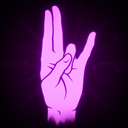
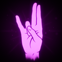
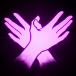
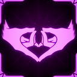
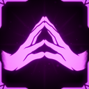
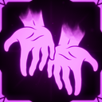
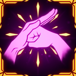

Twinmage
尽管你一直想成为强大的巫师，但有些人就是没有必要的天赋和先天能力。不过，你总可以依靠一对 Elemental Hands 来弥补。
一次只发射一只手时，它的攻击速度会翻倍。
技能
 Twinmage
的不同元素手
Twinmage
的不同元素手
Twinmage 的独特之处在于，它没有固定的主技能或副技能，而是可以为每只手从六种元素中选择一种。
Hand：Flaming Hand
发射一颗火球，造成 30 点火焰伤害。
10% 概率施加 BURNING 状态效果。
投射物速度为 16m/s，最大距离 50m。
Hand：Ice Hand
发射一枚冰霜飞弹，造成 30 点冰霜伤害。
10% 概率施加 FREEZING 状态效果。
投射物速度为 20m/s，最大距离 50m。
Hand：Electric Hand
施放一道闪电，造成 25 点电击伤害。
10% 概率施加 PARALYZED 状态效果。
这是命中扫描攻击，最大距离 50m。
Hand：Wind Blade
发射一道旋风，造成 30 点物理伤害。
10% 概率施加 BLEEDING 状态效果。
投射物速度为 18m/s，最大距离 50m。
Hand：Divine Hand
发射一颗光球，造成 30 点光耀伤害。
10% 概率施加 WEAKENED 状态效果。
投射物速度为 24m/s，最大距离 50m。
Hand：Profane Hand
发射一枚暗影飞弹，造成 30 点暗影伤害。
10% 概率施加 BREACHED 状态效果。
投射物速度为 12m/s，最大距离 50m。
辅助技能：Quickwarp
传送到你所指方向 15 米处。
冷却 6 秒。
职业升级
| 图片 | 稀有度 | 技能 | 说明 | 叠加类型 |
|---|---|---|---|---|
 |
普通 | Twinmage: Sinistra | 左手伤害 +5%，左手攻击速度 +5%；右手伤害 -3%，右手攻击速度 -3%。 | 线性 |
 |
普通 | Twinmage: Dextra | 右手伤害 +5%，右手攻击速度 +5%；左手伤害 -3%，左手攻击速度 -3%。 | 线性 |
| 普通 | Twinmage: Proficiency | Quickwarp 距离：+3 米，每层 +3 米。 | 线性 | |
 |
普通 | Twinmage: Rush | 对敌人施加状态效果后，你会获得 HASTE 状态效果，持续 X 秒，每层 +X 秒。 | 线性 |
 |
稀有 | Twinmage: Guarded | 对敌人施加状态效果后，你会获得 ENFORCED 状态，持续 X 秒，每层 +X 秒。 | 线性 |
 |
稀有 | Twinmage: Mastery | 你的 Elemental Hand 投射物命中后会在 X 米半径内爆炸，每层 +X 米，造成其 25% 伤害的溅射伤害。 | 线性 |
 |
稀有 | Twinmage: Wicked Sign | 施放 Quickwarp 有 6.7% 概率给予你 EMPOWERED、ENFORCED、HASTE 和 FRENZIED 状态效果。如果你正好是 67 HP，则必定触发。 | - |
 |
传奇 | Twinmage: Retaliation | 受到与你某只 Elemental Hand 相同元素的伤害时，你会获得 EMPOWERED 状态效果，持续 X 秒，每层 +X 秒。 | 线性 |